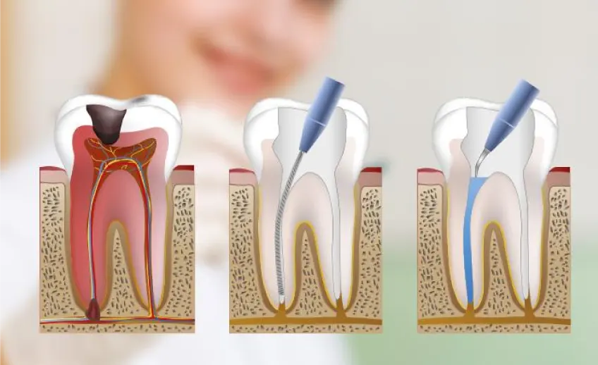

¿En qué consiste?
Tratamiento indicado cuando la pulpa dental está afectada por caries profunda, infección o traumatismo. El objetivo es aliviar el dolor y conservar el diente cuando es posible.
Qué incluye la valoración
- Limpieza y sellado de los conductos del diente.
- Alternativa conservadora frente a la extracción.
- Seguimiento posterior para comprobar la evolución.
Atención cercana y presupuesto claro
Antes de comenzar, te explicaremos las opciones disponibles, los tiempos aproximados y el presupuesto para que puedas tomar una decisión con tranquilidad.
La información de esta página es orientativa y no sustituye una valoración odontológica individual.